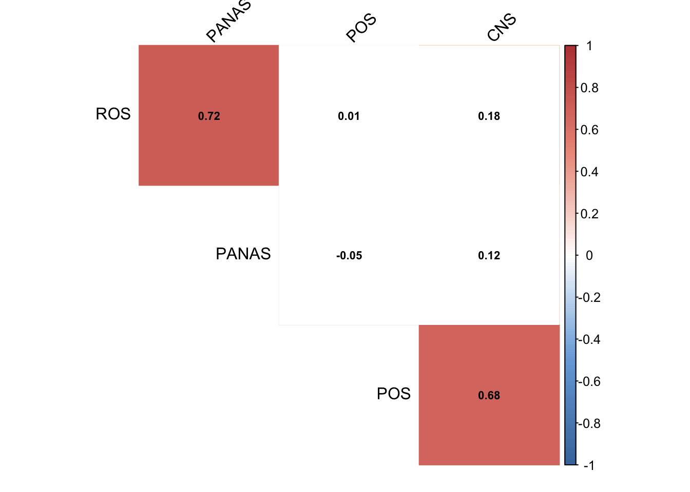
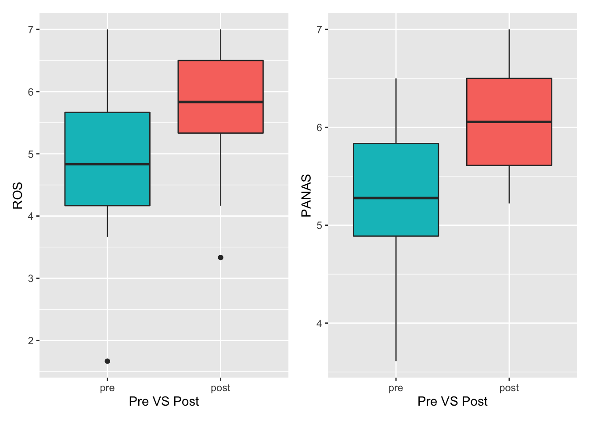

Chapter 4 Pre- and Post-Assessment
4.1 Description
Total 58 entries (29 people respondend to pre-and post-survey) till Jan 2020
4.2 Decrtiptive statistics
Both Restoration Outcome Scale (ROS) and Positive and Negative Affect Schedule (PANAS) have good Cronbach’s alpha, ranging from .88 to .90 ( good internal consistency). The result of Sharpiro test shows that Age and PANAS follow a normal distribution.
| Descriptive Statistics (pre-post survey) | |||||||||||||||
|---|---|---|---|---|---|---|---|---|---|---|---|---|---|---|---|
| vars | variables | n | mean | sd | median | trimmed | mad | min | max | range | skew | kurtosis | se | Cronbachs_alpha | shapiro_test |
| 1 | Age | 45 | 35.71 | 9.37 | 34.00 | 35.59 | 10.38 | 18.0 | 68.0 | 50.00 | 0.59 | 1.41 | 1.40 | NA | 0.059 |
| 2 | Restoration Outcome | 58 | 5.36 | 1.11 | 5.58 | 5.40 | 1.11 | 1.7 | 7.0 | 5.33 | −0.54 | 0.37 | 0.15 | 0.88 | 0.018 |
| 3 | Positive and Negative Affect Schedule | 58 | 5.65 | 0.81 | 5.72 | 5.71 | 0.74 | 3.6 | 7.0 | 3.39 | −0.61 | 0.04 | 0.11 | 0.9 | 0.052 |
4.3 Correlation Test
It’s observed that Restoration Outcome Scale (
ROS) and Positive and Negative Affect Schedule (PANAS) have a strong positive correlation (r=0.722, Spearman): Those who fell the higher sense of positive emotions also feel the higher sense of restorations.Perceived Restorativeness Scale (
POS) also shows the signficant correlation with the nature connection (CNS): those who have a higher sense of nature connection feels higher perceived restorations

4.4 Significance Test (t-test and Wilcoxon Test ): Pre VS Post
As preliminary analyses, we assessed whether there were any differences between pre-test and post-test groups in terms of the respective psychological measures.
We conducted the Welch Two Sample t-test on
PANASand Wilcoxon Signed-rank test onROS.Statistically significant differences were observed in both scales. Cohen’s d was estimated at 0.51 and 1.002, which are medium to large effect based on the Cohen’s guidelines (1992).
This study identified that those who engaged in GUI programs feel more restored and more positive emmotions right after attending a program.
Going forward, program-wise analysis needs to be conducted to see if attending a particular program shows different ROS and PANAS compared to those who attend a different program. For this, we need further data collections (minimum of 20 participants in each program).
| Summary of Test Statistics: Pre-and-post Survey | |||||||
|---|---|---|---|---|---|---|---|
| vars | scales | Cronbachs_alpha | shapiro_test | pre_means | post_means | test_statistics | effect_size |
| 1 | ROS | 0.88 | 0.018 | 4.94 | 5.78 | p < 0.01 | 0.517 |
| 2 | PANAS | 0.90 | 0.052 | 5.20 | 6.10 | p < 0.001 | 1.002 |
| *t-test for PANAS, and Wilcoxon test for ROS | |||||||
